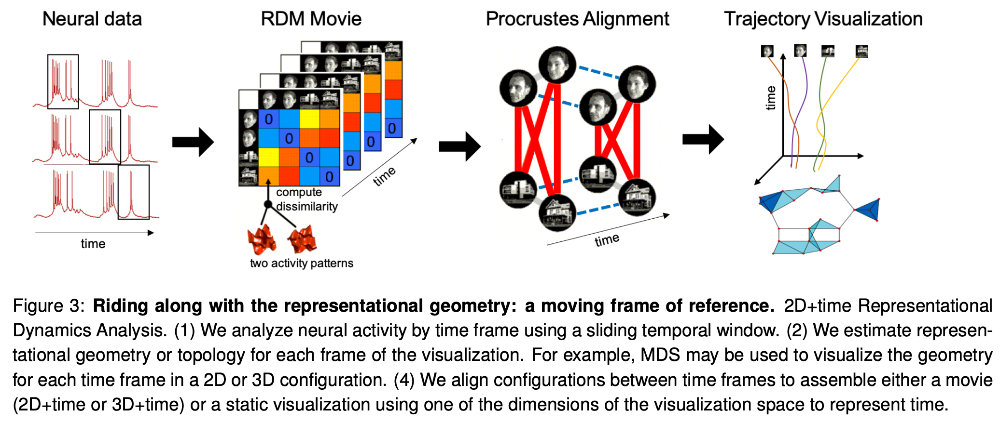
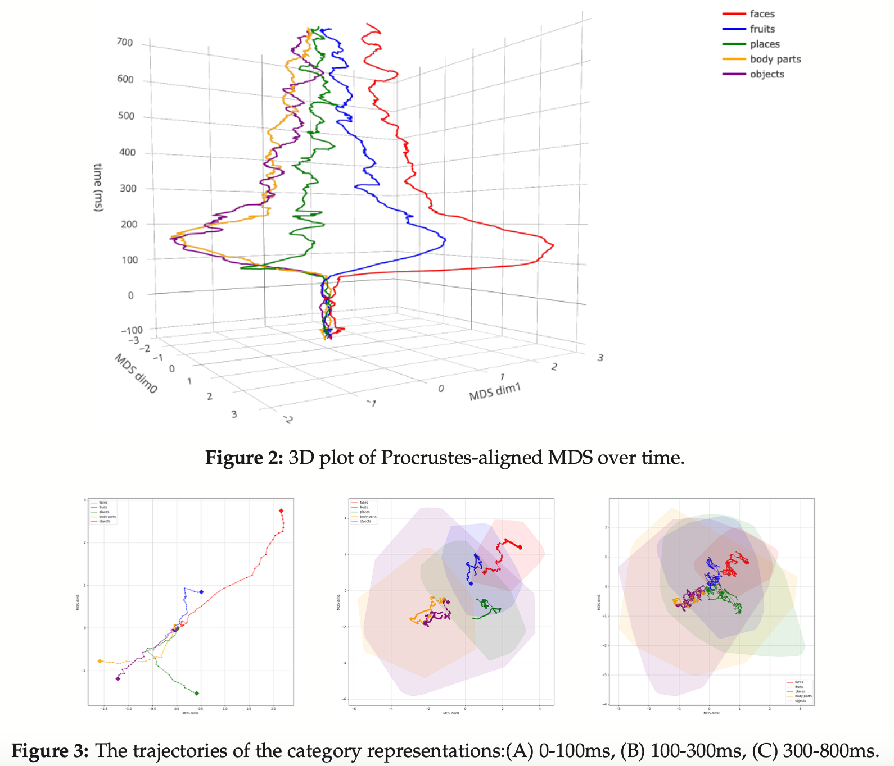
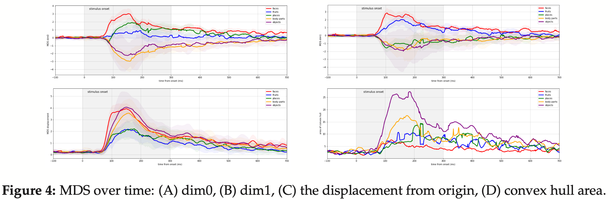
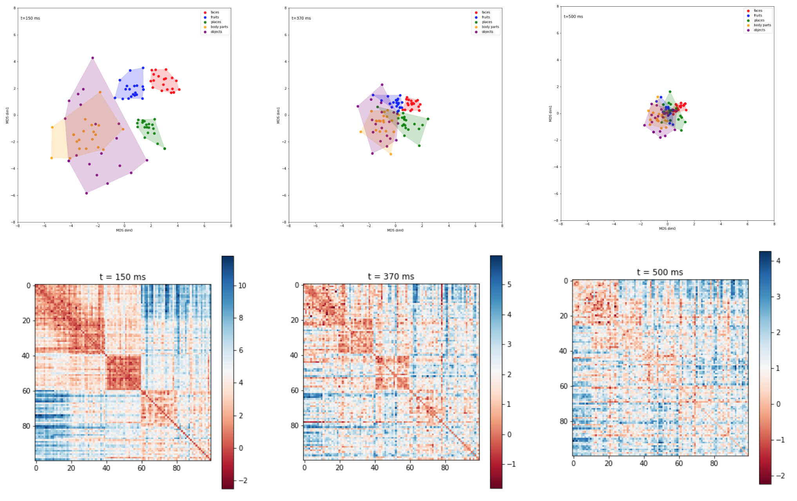

GitHub code: https://github.com/rsagroup/pyrsa (work in progress)
Joint work with Dr. Nikolaus Kriegeskorte (Columbia), Dr. Marieke Mur (Western), Dr. Tim Kietzmann (Cambridge) and Dr. Andrew Bell (Oxford)
I develop a novel visualization and inference framework to compare human brain data (e.g. neuroimaging, neural recording) with computational models (e.g. neural networks) taking the signal dynamics into account, which can (1) help neuroscientists understand how brain encode and decode information over time, (2) help create better AI algorithms inspired by these discoveries, and (3) help visualize the abstract concept of representations in the brain and identify critical stages in human visual processing.
Representational similarity analysis (RSA) has been shown to be an effective framework to characterize brain-activity profiles and deep neural network activations as representational geometry by computing the pairwise distances of the response patterns as a representational dissimilarity matrix (RDM). However, how to properly analyze and visualize the representational geometry as dynamics over the time course from stimulus onset to offset is not well understood. In this work, we formulated the pipeline to understand representational dynamics with RDM movies and Procrustes-aligned Multidimensional Scaling (pMDS), and applied it to neural recording of monkey IT cortex. Our results suggest that the the multidimensional scaling alignment can genuinely capture the dynamics of the category-specific representation spaces with multiple visualization possibilities, and that object categorization may be hierarchical, multi-staged, and oscillatory (or recurrent).
[1] Lin, B., Mur, M., Kietzmann, T., & Kriegeskorte, N. (2019). Visualizing Representational Dynamics with Multidimensional Scaling Alignment. In Proceedings of Conference on Cognitive Computational Neuroscience (CCN), (pp. 1030-1033).
link: https://arxiv.org/abs/1906.09264
To capture the neural dynamics, the framework involves four steps (as in the figure below). First each time frame of neural activity is analyzed separately in a representational similarity analysis (RSA) paradigm. This could involve, for example, spike counts performed in a temporal sliding window to obtain a neural population activity pattern for each experimental condition. Second, for each time frame, the representational dissimilarity is estimated for each pair of experimental conditions and assembled in the representational dissimilarity matrix (RDM). Stacking these RDMs along the time dimension results in an RDM movie. Third, each RDM is separately subjected to multidimensional scaling (MDS) to obtain, for each time frame, a 2d or 3d configuration of the points for visualization. Fourth, the configurations are aligned to each other using Generalized Procrustes Analysis (GPA), and finally, the aligned configurations are presented together.

I benchmarked my method on the macaque (a type of monkey)'s single-electrode recordings from the inferior bank of the ST segment, shown 100 grayscale object images from five different categories (faces, fruits, places, body parts and objects). RSA was further applied to select visually-responsive neurons and extract single-trial response patterns from the spike-density function. The recordings were truncated into sections of 821 ms (starting from 100ms before stimulus onset). RDM movies were generated using a sliding window of 21 ms with cross-validated spike rate distance (SRD) as the reponse-pattern dissimilarity measure.
Usually, the dynamic information is missing if we consider each time frame independently, as there are no intertemporal information given. However, with the alignment that I proposed, we can visualize the smooth transition of each activity below in this movie (each dot is an activity in an individual session; when time is negative, it means the stimulus has not yet begun).
We can also easily visualize the trajectory with time as the third dimension (see below, with each colored trajectory as the average activity of the different stimuli of the same image category). Dissecting temporal segment into 2d plots, we can gain interesting biological insights like: the categories faces and fruits diverges become discriminable rapidly in the IT population code due to their distinct visual dissimilarity, while places, objects and body parts di- verge much later in time. Among the three late classes, the separation of the objects and body parts happens even later in time, suggesting a hierarchical process of categorization.

We can even perform downstream visualizations, such as plotting the area of the convex hulls of the representational space of the same image category (i.e. how big is does the brain, as a computational model, holds the abstract representations of all 20 different image instances of category, say "faces", over time).

Here we can compare a traditional method to visualize a time frame (the heatmaps on the bottom are the demonstration of a representational dissimilarity matrix), with the backbone that we are using (the scatter plots on the top are the examples of visualizing them with multidimensional scaling. Neither methods gave us a complete intuition of how the trajectories of the abstract representations evolve over time as my method above did.

To better understand the framework I proposed, I am comparing my method with other state-of-the-art methods as well as MDS with full temporal information. Given the neural data I have, I am investigating the oscillatory behaviors in the representational space, and exploring recurrence in neuroimaging data of different brain regions and time scales. I am also visualizing the representational dynamics of deep networks in computer vision tasks. Stay tuned~